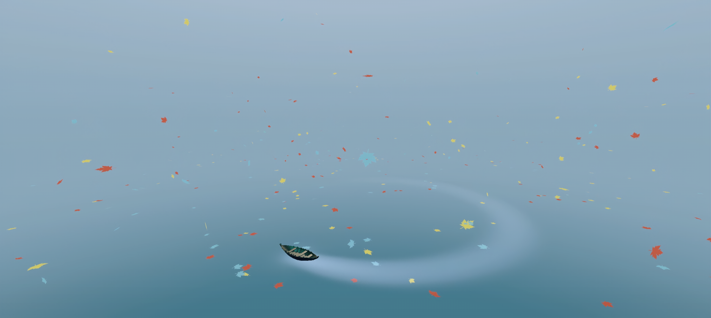
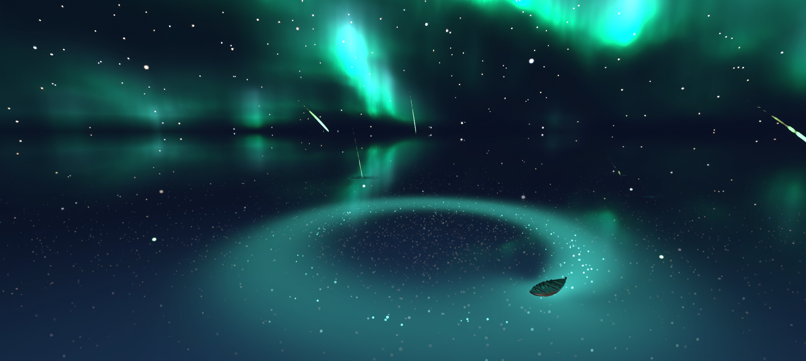

After obtaining the fluid velocity RT through AnyTrail, pass in the VFX graph and let the particles
move towards the fluid velocity
Maple leaf implementation method: Generate maple leaf in the air → turbulence, gravity, drag → Generate
new maple leaf in place after landing -> Follow the fluid movement

Star river implementation method：Meteors in the sky → gravity, trailing → ripples in place after landing
(wrap screen color) and slowly falling meteors;
Meteors over the water are driven by fluid.

Surface interaction: AnyTrail